Case detalhado
Módulo de gestão e análise de atestados com fluxo colaborativo
Solução web para envio, triagem, análise e acompanhamento de atestados médicos, com rastreabilidade das decisões, comunicação entre áreas e visão gerencial por meio de filtros e painéis analíticos.
O projeto une a frente do colaborador, com envio estruturado e consulta do histórico, à frente técnica e gerencial de RH/SSMA, com análise operacional, chat contextual, paginação assíncrona e gráficos para suporte à decisão.
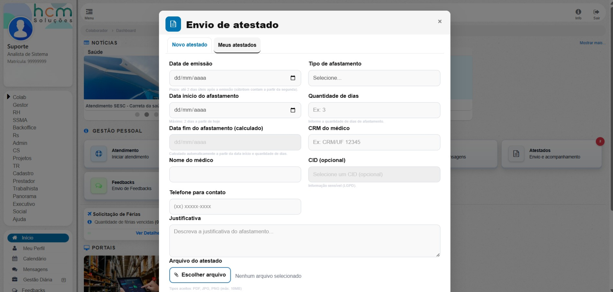
Formulário estruturado com datas, tipo de afastamento, dados médicos, anexos e justificativa.
Fluxo de revisão com chat contextual, ações por status e acompanhamento entre colaborador, RH e SSMA.
Gráficos por status, tipo, situação, evolução temporal e rankings para leitura gerencial.
Galeria
Visões da funcionalidade
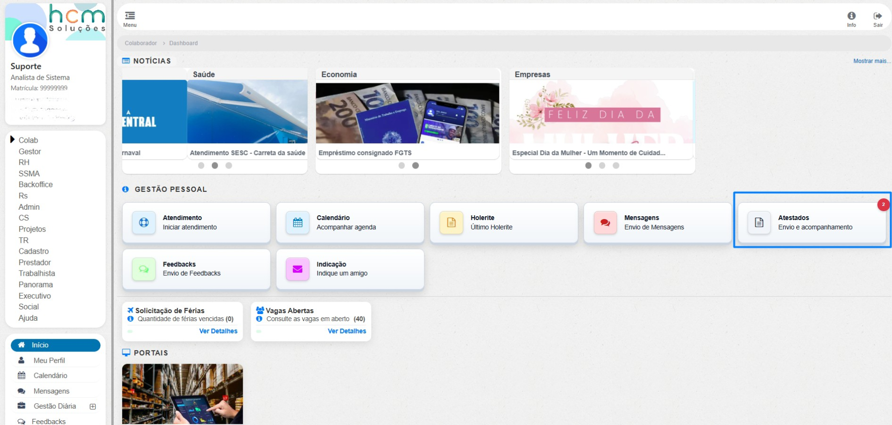
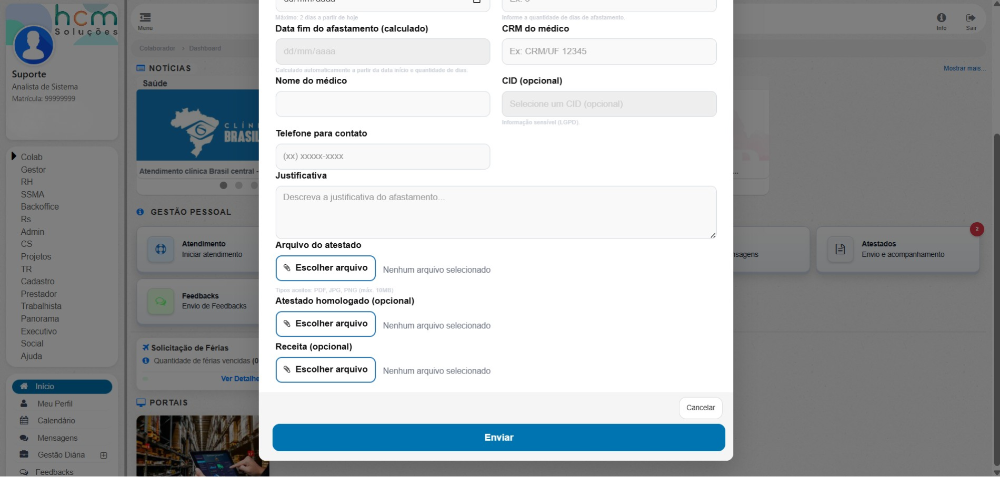
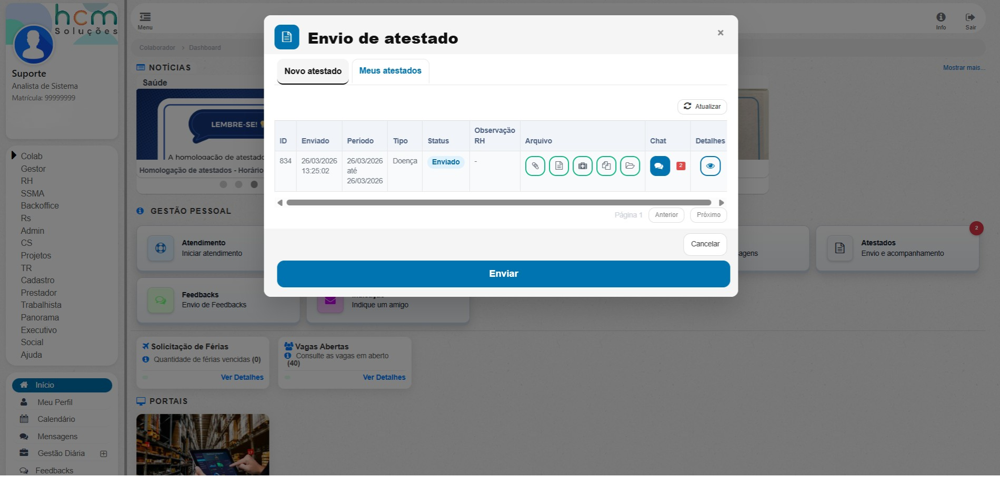
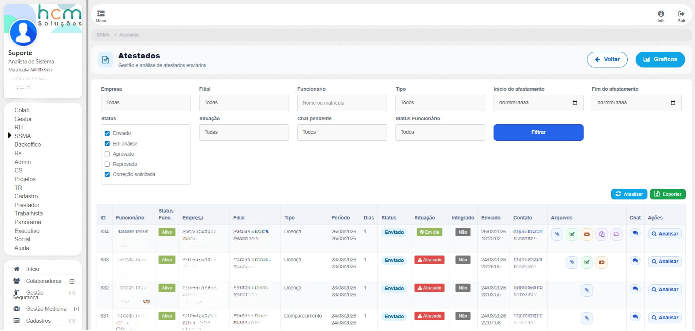
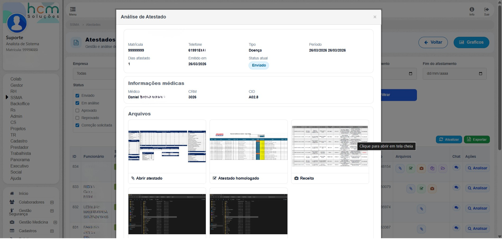
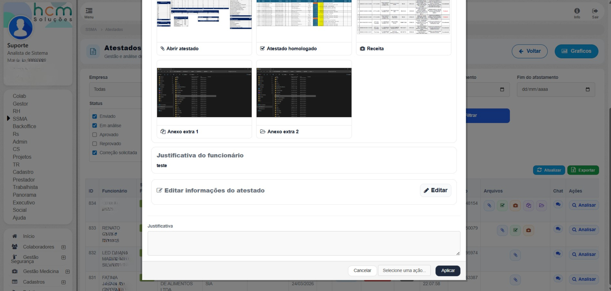
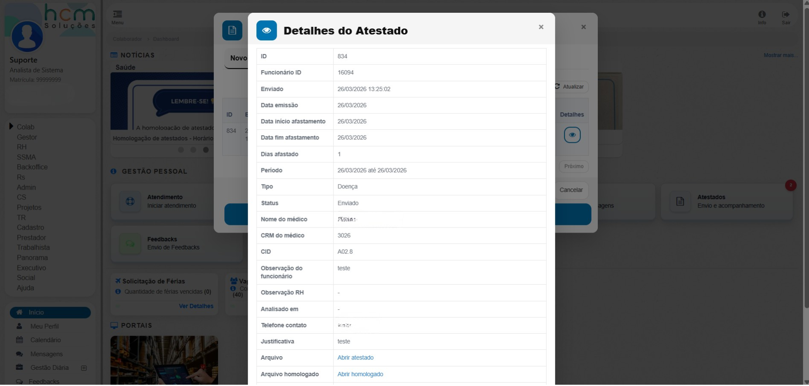
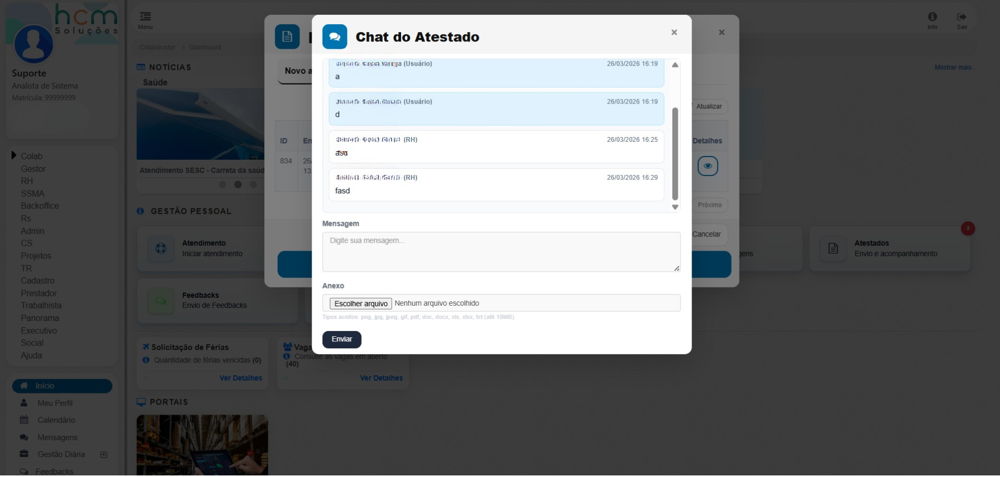
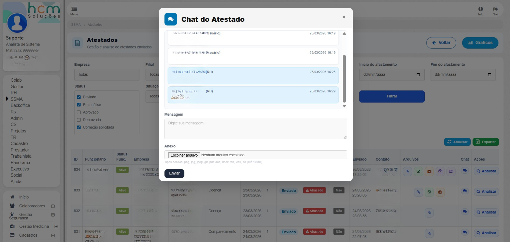
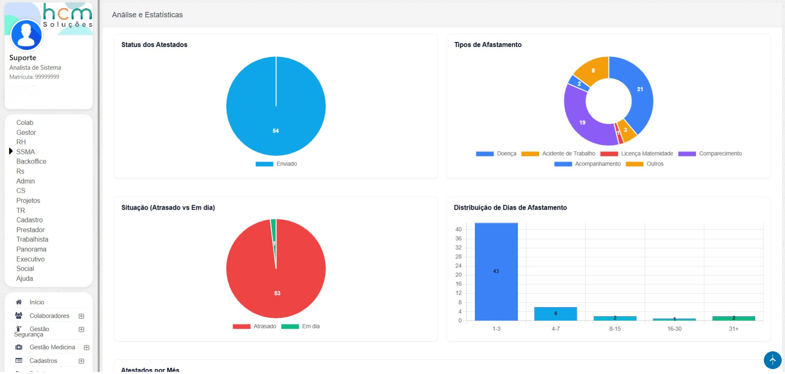
Contexto e problema
A funcionalidade faz parte de um sistema corporativo de gestão de pessoas com foco em saúde ocupacional e controle de afastamentos.
Antes da implementação, o processo tendia a ser fragmentado, com envio de documentos sem padronização, pouca rastreabilidade das decisões e dificuldade de comunicação entre as áreas.
Isso gerava retrabalho, lentidão na tomada de decisão, inconsistência de dados e menor governança sobre prazos, pendências e status dos atestados.
Solução implementada
- Frente do colaborador com modal de novo envio e consulta de histórico, incluindo campos dependentes e formulário estruturado.
- Frente de análise técnica e gestão com filtros combináveis, paginação assíncrona e ações de revisão e atualização de status.
- Chat vinculado ao atestado para tratativas e anexos, respeitando regras de bloqueio conforme o estado final.
- Camada analítica carregada de forma assíncrona com gráficos de status, tipos, situação, evolução temporal e rankings.
- Tour interativo para onboarding contextual e orientação do usuário pela interface.
Tecnologias utilizadas
- Back-end em PHP seguindo padrão MVC, com controlador para sessão, permissões e composição dos dados.
- Front-end em HTML, CSS, JavaScript, jQuery e Bootstrap com modais, abas e componentes visuais.
- Chart.js com plugin de rótulos para visualização comparativa e de tendência.
- Biblioteca de tour guiado para onboarding contextual.
- Banco relacional com consultas para parâmetros, usuários, empresa, filial e catálogos como CID.
- Endpoints internos via AJAX para listagem, detalhes, status, exportação e chat.
Desafios técnicos
- Orquestração de estado da tela entre filtros, paginação, modal de análise, chat e gráficos sem recarregar a página.
- Confiabilidade da camada gráfica, tratada com verificação de carregamento, tentativa de recuperação e fallback amigável.
- Regras de negócio no chat para impedir mensagens após fechamento em cenários específicos.
- Escalabilidade da listagem, resolvida com paginação assíncrona e filtros granulares para reduzir payload e tempo de resposta percebido.
Resultados e boas práticas
O projeto trouxe padronização ao processo de envio e análise de atestados, aumentou a rastreabilidade das decisões, reduziu retrabalho operacional e fortaleceu a governança por status, prazos e pendências.
Fluxo estruturado para envio, triagem e análise dos atestados.
Mais visibilidade sobre decisões, tratativas e comunicação entre as áreas.
Atualização parcial de componentes, paginação e destruição controlada de gráficos.
Formulários orientados, alertas contextuais, estados de botão e tour de onboarding.